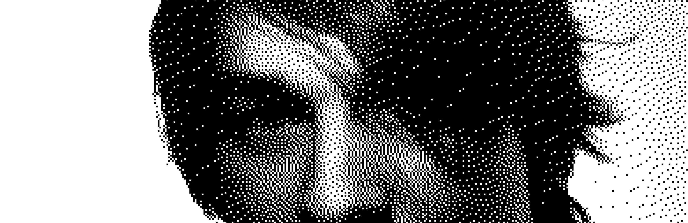

Je suis finissant dans la Technique d’intégration Multimédia. Mon objectif à long terme est
d'avoir contribué ou même d'avoir dirigé une équipe sur un projet phare du milieu. Je suis animé par un désir
constant de progresser, de démystifier de nouveaux concepts et de les appliquer pour me démarquer.
Je suis une personne engagée et débrouillarde, qui maîtrise des outils comme Blender, Figma et DaVinci Resolve, et
qui cherche toujours à faire ce petit effort supplémentaire pour atteindre un résultat professionnel et soigné.
J'ai
développé une solide expérience sur ces logiciels grâce à mes projets personnels et à ma passion pour le
domaine.
Par ailleurs, je possède également des compétences et de l'expérience en soudure, ayant obtenu mon diplôme
d'études
professionnelles (DEP) en soudage-montage à l'École des métiers spécialisés, un domaine dans lequel j'ai évolué
pendant trois ans.
